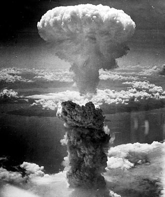

En Asia
A pesar de ser nominalmente una democracia parlamentaria, el Ejército y la Marina de Japón eran dirigidos por los ministros de Guerra y Marina (que debían ser obligatoriamente generales o almirantes retirados o activos), los cuales no estaban sujetos a la autoridad del Primer Ministro, sino directamente a la del Emperador. De las 29 personas que recibieron el cargo de Primer Ministro durante el periodo 1885-1945, 15 eran almirantes o generales retirados o activos (durante el período 1932-45 fueron 8 de 11).
Esta anómala situación, combinada con el paso de un ejército permanente a otro reclutado (lo que obligaba a dar instrucción militar a todos los jóvenes del país), favoreció la progresiva militarización de la sociedad japonesa; el ejército y la marina, escasamente controlados por el poder civil, definían sus propios objetivos y se peleaban por los recursos presupuestarios disponibles, pero ambos coincidían en su desprecio a la clase política. Se formaron grupos de opinión enfrentados dentro de las fuerzas armadas que llevaban una "política paralela" a la del gobierno. Japón, un conjunto de islas con gran cantidad de población pero falto de recursos naturales, entró en el siglo XX con el firme propósito de imitar el sistema económico de las potencias occidentales, incluyendo el colonialismo, como forma de mantener su propio desarrollo, y volvió sus ojos hacia el continente asiático.
En 1894 Japón, que ya hacía tiempo que se disputaba la península de Corea con el Imperio Chino, inició la Primera Guerra Sino-japonesa con un ataque sin previo aviso. Para sorpresa de todos, el pequeño Imperio de Japón aplastó a las fuerzas del mastodóntico Imperio Chino, forzando un tratado de paz que le supuso la concesión de Taiwán, de las Islas Pescadores y de Liao-dong. La Rusia Imperial intentó limitar el dominio local de la emergente potencia: subvencionó el pago de las deudas de guerra chinas con Japón y, apoyada por Alemania y Francia, humilló a Tokio e impuso la restitución de Liao-dong a China.
Rusia y Japón se vieron desde ese momento implicadas en la lucha por la influencia en la parte noroeste de China. Rusia obtuvo la concesión para la construcción del ferrocarril Transmanchuriano, y aumentó su presencia militar en el sector con la creación de una base naval en Port Arthur, en la parte sur de la península de Liao-dong. La política rusa se encaminaba a desarrollar su influencia sobre toda Manchuria y Corea. Japón se inquietó e intentó en un principio negociar una repartición de áreas de influencia en Manchuria, aunque sin éxito. De modo que en 1904 la Marina Imperial Japonesa atacó y destruyó (de nuevo sin previa declaración de guerra) la flota rusa estacionada en Port Arthur. Japón estaba bien preparado, dominaba los mares de la zona en conflicto y sus bases estaban cerca de la zona. Por el contrario, Rusia estaba minada por tensiones internas, dirigida en el este por un mando incompetente e incapaz de asegurar un enlace eficaz con el oeste, ya que el Transiberiano era su única vía terrestre, por lo que no pudo plantar cara. La Guerra Ruso-japonesa terminó en 1905 con un armisticio que humilló a Rusia y dejó Liao-dong en manos de Japón, junto con la mitad meridional de la isla Sajalín y la preeminencia absoluta sobre Corea. En 1914, Japón declaró la guerra a Alemania, consiguiendo al final de la Primera Guerra Mundial las posesiones alemanas del Océano Pacífico septentrional.
Consecuencias

Además de los horrores propios de toda guerra, la Segunda Guerra Mundial introdujo formas de sufrimiento no achacables a la propia escala de la misma: |
Violaciones masivas de mujeres por parte de tropas soviéticas y japonesas. Experimentos científicos usando prisioneros realizados por médicos nazis y japoneses, que solían acabar con la muerte del individuo. |
||
La Segunda Guerra Mundial contribuyó a que emergieran dos superpotencias que buscaban repartirse el mundo: Estados Unidos y la URSS. La Sociedad de Naciones, a la que se responsabilizó de contribuir a desatar la guerra, fue reemplazada por la ONU. |
Masacres masivas de población y de prisioneros enemigos perpetrada por las fuerzas japonesas, principalmente en China, y las alemanas, en Rusia. |
||
La carta de las Naciones Unidas se firmó en San Francisco el 26 de junio de 1945. En los Juicios de Núremberg y Tokio, parte de la jerarquía nazi y del Tenno nipón fue juzgada y condenada por crímenes contra la humanidad. La investigación científica y técnica, en su conjunto, se benefició de un fuerte impulso en particular: el dominio del átomo tras el Proyecto Manhattan. También contribuyó a la creación del helicóptero, los aviones de reacción y la creación del ICBM. |
|||
Deportaciones masivas a campos de concentración y de trabajo forzado, organizados en Europa por Alemania (contra judíos, homosexuales, eslavos, discapacitados, gitanos, Testigos de Jehová, comunistas, españoles republicanos, sacerdotes católicos y ministros de otras religiones, etc.), que se convertirían en campos de exterminio donde tendría lugar el Holocausto; también en Estados Unidos y otros países de América, internando a sus ciudadanos de ascendencia japonesa. |
Tras la guerra, malos tratos a prisioneros de guerra, sobre todo por parte de la Unión Soviética. |
||
En el ámbito intelectual y artístico, queda de forma oprimente y, a veces, obsesiva, la pregunta de cómo fue posible la guerra y cómo fueron posibles las circunstancias históricas que llevaron a ella. En muchos casos esta cuestión se ve agravada por el saber de que intelectuales y artistas colaboraron con los totalitarismos y el clima bélico o, al menos, no se opusieron decididamente a ello. Guerra después de la guerra: Combates en Indochina entre franceses y movimientos separatistas. |
Durísimos años de postguerra para la población civil. Como consecuencia de los cambios territoriales, millones de personas se vieron desplazadas y desarraigadas de sus lugares de origen. |
Bombardeo aéreo masivo de civiles y lanzamiento de cohetes V-1 y V-2 iniciado por el Eje en Varsovia, Londres, Coventry y otras ciudades, que fue continuado por los aliados a una escala mucho mayor (Tokio, Berlín, Dresde y Hamburgo entre otras). |
|